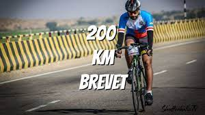

Brevet
As in all brevet events, there is emphasis on self-sufficiency. Riders buy supplies anywhere along the course, but support by motorized vehicles is prohibited except at checkpoints. There is a 90-hour limit and the clock runs continuously. Many riders sleep as little as possible, sometimes catching a few minutes beside the road before continuing.
Participants must first complete a series of brevets (randonneuring events) within the same calendar year as PBP. The time frame is different for Australia and Oceania, so riders can qualify in summer. A series consists of 200 km, 300 km, 400 km and 600 km. Each can be replaced by a longer ride. Prior to 2007, the qualifying rides had to be completed from shortest to longest.
Where once PBP was contested by a few professionals as a demonstration of the bicycle's potential, today the focus is on the ordinary rider. PBP continues to attract competitive riders. Despite insistence that it isn't a race, PBP offers trophies and prestige to the first finishers.